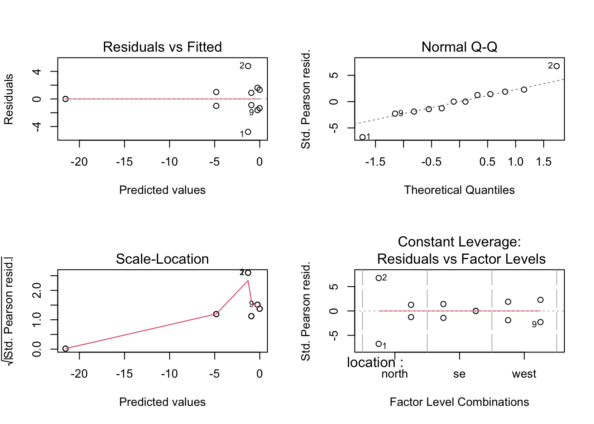

rpn_bleach <- read.csv('rpn_bleach_2015.csv') %>%
as_tibble() %>%
mutate_at(vars(location, depth, transect, group, status), factor)Percent Cover and Bleaching in 2015
rpn_bleach# A tibble: 1,512 × 7
location depth transect point metric group status
<fct> <fct> <fct> <int> <int> <fct> <fct>
1 north sh one 1 0 PLOB PB
2 north sh one 2 20 PLOB PB
3 north sh one 3 40 PLOB PB
4 north sh one 4 60 MA HAL
5 north sh one 5 80 TURF na
6 north sh one 6 100 TURF na
7 north sh one 7 120 TURF na
8 north sh one 8 140 PLOB PB
9 north sh one 9 160 PLOB PB
10 north sh one 10 180 PLOB PB
# ℹ 1,502 more rowsrpn_summary <- rpn_bleach %>%
group_by(location, depth, transect, group) %>%
dplyr::summarise(total_count = n())`summarise()` has grouped output by 'location', 'depth', 'transect'. You can
override using the `.groups` argument.rpn_PLOB <- rpn_bleach %>%
filter(group == "PLOB") %>%
group_by(location, depth, transect) %>%
dplyr::summarise(total_count = n())`summarise()` has grouped output by 'location', 'depth'. You can override using
the `.groups` argument.rpn_PLOB# A tibble: 12 × 4
# Groups: location, depth [6]
location depth transect total_count
<fct> <fct> <fct> <int>
1 north dp one 104
2 north dp two 113
3 north sh one 83
4 north sh two 88
5 se dp one 34
6 se dp two 28
7 se sh one 35
8 se sh two 15
9 west dp one 89
10 west dp two 73
11 west sh one 74
12 west sh two 101rpn_plob <- read.csv('rpn_cover.csv') %>%
as_tibble() %>%
filter(group == "PLOB") %>%
mutate_at(vars(location, depth, transect, group), factor) %>%
mutate(
cover = total_count/total_points,
failures = total_points - total_count
)rpn_plob# A tibble: 12 × 8
location depth transect group total_count total_points cover failures
<fct> <fct> <fct> <fct> <int> <int> <dbl> <int>
1 north dp one PLOB 104 126 0.825 22
2 north dp two PLOB 113 126 0.897 13
3 north sh one PLOB 83 126 0.659 43
4 north sh two PLOB 88 126 0.698 38
5 se dp one PLOB 34 124 0.274 90
6 se dp two PLOB 28 105 0.267 77
7 se sh one PLOB 35 126 0.278 91
8 se sh two PLOB 15 126 0.119 111
9 west dp one PLOB 89 126 0.706 37
10 west dp two PLOB 73 126 0.579 53
11 west sh one PLOB 74 126 0.587 52
12 west sh two PLOB 101 126 0.802 25Porites
Generalized linear model
plob.glm <- glm(cbind(total_count, failures) ~ location * depth,
family = binomial(link = "logit"),
data = rpn_plob)par(mfrow = c(2, 2))
plot(plob.glm)
summary(plob.glm)
Call:
glm(formula = cbind(total_count, failures) ~ location * depth,
family = binomial(link = "logit"), data = rpn_plob)
Deviance Residuals:
Min 1Q Median 3Q Max
-2.54165 -1.20892 -0.00388 1.28236 2.71923
Coefficients:
Estimate Std. Error z value Pr(>|z|)
(Intercept) 1.8245 0.1822 10.017 < 2e-16 ***
locationse -2.8154 0.2352 -11.973 < 2e-16 ***
locationwest -1.2368 0.2246 -5.506 3.68e-08 ***
depthsh -1.0773 0.2267 -4.753 2.00e-06 ***
locationse:depthsh 0.6719 0.3138 2.142 0.0322 *
locationwest:depthsh 1.3105 0.2956 4.434 9.25e-06 ***
---
Signif. codes: 0 '***' 0.001 '**' 0.01 '*' 0.05 '.' 0.1 ' ' 1
(Dispersion parameter for binomial family taken to be 1)
Null deviance: 396.020 on 11 degrees of freedom
Residual deviance: 31.694 on 6 degrees of freedom
AIC: 102.95
Number of Fisher Scoring iterations: 4https://www.rpubs.com/daharo_calpoly/502695
rpn_plob$groups <- interaction(rpn_plob$location, rpn_plob$depth)Create a post-hoc model
model_plob <- with(rpn_plob, glm(cbind(total_count, failures) ~ groups, family = binomial))Determine the post-hoc comparisons of interest
summary(glht(model_plob,
linfct = mcp(groups =
#Is the difference between these groups different from zero?
c("(north.sh) - (west.sh) = 0",
"(north.sh) - (west.dp) = 0",
"(north.sh) - (se.sh) = 0",
"(north.sh) - (se.dp) = 0",
"(north.dp) - (west.sh) = 0",
"(north.dp) - (west.dp) = 0",
"(north.dp) - (se.sh) = 0",
"(north.dp) - (se.dp) = 0",
"(se.sh) - (west.sh) = 0",
"(se.sh) - (west.dp) = 0",
"(se.dp) - (west.sh) = 0",
"(se.dp) - (west.dp) = 0"))),
test = adjusted("holm"))
Simultaneous Tests for General Linear Hypotheses
Multiple Comparisons of Means: User-defined Contrasts
Fit: glm(formula = cbind(total_count, failures) ~ groups, family = binomial)
Linear Hypotheses:
Estimate Std. Error z value Pr(>|z|)
(north.sh) - (west.sh) == 0 -0.07377 0.19208 -0.384 0.795
(north.sh) - (west.dp) == 0 0.15943 0.18835 0.846 0.795
(north.sh) - (se.sh) == 0 2.14346 0.20771 10.319 < 2e-16 ***
(north.sh) - (se.dp) == 0 1.73807 0.20078 8.657 < 2e-16 ***
(north.dp) - (west.sh) == 0 1.00357 0.22777 4.406 3.16e-05 ***
(north.dp) - (west.dp) == 0 1.23676 0.22464 5.506 1.47e-07 ***
(north.dp) - (se.sh) == 0 3.22079 0.24110 13.359 < 2e-16 ***
(north.dp) - (se.dp) == 0 2.81541 0.23515 11.973 < 2e-16 ***
(se.sh) - (west.sh) == 0 -2.21723 0.20893 -10.612 < 2e-16 ***
(se.sh) - (west.dp) == 0 -1.98403 0.20551 -9.654 < 2e-16 ***
(se.dp) - (west.sh) == 0 -1.81184 0.20204 -8.968 < 2e-16 ***
(se.dp) - (west.dp) == 0 -1.57865 0.19850 -7.953 8.88e-15 ***
---
Signif. codes: 0 '***' 0.001 '**' 0.01 '*' 0.05 '.' 0.1 ' ' 1
(Adjusted p values reported -- holm method)rpn_plob_bleach <- rpn_bleach %>%
filter(group == 'PLOB' & status == 'BL') %>%
group_by(location, depth, transect) %>%
dplyr::summarise(total_count = n())`summarise()` has grouped output by 'location', 'depth'. You can override using
the `.groups` argument.rpn_plob_bleach# A tibble: 0 × 4
# Groups: location, depth [0]
# ℹ 4 variables: location <fct>, depth <fct>, transect <fct>, total_count <int>rpn_plob_pb <- rpn_bleach %>%
filter(group == 'PLOB' & status == 'PB') %>%
group_by(location, depth, transect) %>%
dplyr::summarise(total_count = n())`summarise()` has grouped output by 'location', 'depth'. You can override using
the `.groups` argument.rpn_plob_pb# A tibble: 9 × 4
# Groups: location, depth [5]
location depth transect total_count
<fct> <fct> <fct> <int>
1 north dp one 5
2 north dp two 49
3 north sh one 40
4 north sh two 31
5 se dp two 2
6 west dp one 70
7 west dp two 55
8 west sh one 64
9 west sh two 46rpn_plob_pb2 <-
as.data.frame(rpn_plob_pb) %>%
add_row(location = 'se', depth = 'dp', transect = 'two', total_count = 0) %>%
add_row(location = 'se', depth = 'sh', transect = 'one', total_count = 0) %>%
add_row(location = 'se', depth = 'sh', transect = 'two', total_count = 0)rpn_plob_pb.main <- rpn_plob_pb2 %>%
#as_tibble() %>%
#filter(group == "PLOB") %>%
#mutate_at(vars(location, depth, transect, group), factor) %>%
mutate(
cover = total_count/126,
failures = 126 - total_count
)rpn_plob_pb.main location depth transect total_count cover failures
1 north dp one 5 0.03968254 121
2 north dp two 49 0.38888889 77
3 north sh one 40 0.31746032 86
4 north sh two 31 0.24603175 95
5 se dp two 2 0.01587302 124
6 west dp one 70 0.55555556 56
7 west dp two 55 0.43650794 71
8 west sh one 64 0.50793651 62
9 west sh two 46 0.36507937 80
10 se dp two 0 0.00000000 126
11 se sh one 0 0.00000000 126
12 se sh two 0 0.00000000 126rpn_plob_pale <- rpn_bleach %>%
filter(group == 'PLOB' & status == 'P') %>%
group_by(location, depth, transect) %>%
dplyr::summarise(total_count = n())`summarise()` has grouped output by 'location', 'depth'. You can override using
the `.groups` argument.rpn_plob_pale# A tibble: 12 × 4
# Groups: location, depth [6]
location depth transect total_count
<fct> <fct> <fct> <int>
1 north dp one 87
2 north dp two 52
3 north sh one 28
4 north sh two 37
5 se dp one 23
6 se dp two 2
7 se sh one 29
8 se sh two 9
9 west dp one 17
10 west dp two 16
11 west sh one 5
12 west sh two 55rpn_plob_pale.main <- rpn_plob_pale %>%
#as_tibble() %>%
#filter(group == "PLOB") %>%
#mutate_at(vars(location, depth, transect, group), factor) %>%
mutate(
cover = total_count/126,
failures = 126 - total_count
)rpn_plob_pale.main# A tibble: 12 × 6
# Groups: location, depth [6]
location depth transect total_count cover failures
<fct> <fct> <fct> <int> <dbl> <dbl>
1 north dp one 87 0.690 39
2 north dp two 52 0.413 74
3 north sh one 28 0.222 98
4 north sh two 37 0.294 89
5 se dp one 23 0.183 103
6 se dp two 2 0.0159 124
7 se sh one 29 0.230 97
8 se sh two 9 0.0714 117
9 west dp one 17 0.135 109
10 west dp two 16 0.127 110
11 west sh one 5 0.0397 121
12 west sh two 55 0.437 71rpn_plob_healthy <- rpn_bleach %>%
filter(group == 'PLOB' & status == 'H') %>%
group_by(location, depth, transect) %>%
dplyr::summarise(total_count = n())`summarise()` has grouped output by 'location', 'depth'. You can override using
the `.groups` argument.rpn_plob_healthy# A tibble: 10 × 4
# Groups: location, depth [6]
location depth transect total_count
<fct> <fct> <fct> <int>
1 north dp one 12
2 north dp two 12
3 north sh one 15
4 north sh two 20
5 se dp one 11
6 se sh one 6
7 se sh two 6
8 west dp one 2
9 west dp two 2
10 west sh one 5rpn_plob_healthy2 <-
as.data.frame(rpn_plob_healthy) %>%
add_row(location = 'se', depth = 'dp', transect = 'two', total_count = 0) %>%
add_row(location = 'west', depth = 'sh', transect = 'two', total_count = 0)rpn_plob_healthy2 location depth transect total_count
1 north dp one 12
2 north dp two 12
3 north sh one 15
4 north sh two 20
5 se dp one 11
6 se sh one 6
7 se sh two 6
8 west dp one 2
9 west dp two 2
10 west sh one 5
11 se dp two 0
12 west sh two 0rpn_plob_healthy.main <- rpn_plob_healthy2 %>%
#as_tibble() %>%
#filter(group == "PLOB") %>%
#mutate_at(vars(location, depth, transect, group), factor) %>%
mutate(
cover = total_count/126,
failures = 126 - total_count
)rpn_plob_healthy.main location depth transect total_count cover failures
1 north dp one 12 0.09523810 114
2 north dp two 12 0.09523810 114
3 north sh one 15 0.11904762 111
4 north sh two 20 0.15873016 106
5 se dp one 11 0.08730159 115
6 se sh one 6 0.04761905 120
7 se sh two 6 0.04761905 120
8 west dp one 2 0.01587302 124
9 west dp two 2 0.01587302 124
10 west sh one 5 0.03968254 121
11 se dp two 0 0.00000000 126
12 west sh two 0 0.00000000 126Pocillopora
rpn_poci_bleach <- rpn_bleach %>%
filter(group == 'POCI' & status == 'BL') %>%
group_by(location, depth, transect) %>%
dplyr::summarise(total_count = n())`summarise()` has grouped output by 'location', 'depth'. You can override using
the `.groups` argument.rpn_poci_bleach# A tibble: 6 × 4
# Groups: location, depth [5]
location depth transect total_count
<fct> <fct> <fct> <int>
1 north dp one 1
2 se dp one 1
3 se dp two 2
4 se sh two 1
5 west dp one 4
6 west sh two 2rpn_poci_bleach2 <-
as.data.frame(rpn_poci_bleach) %>%
add_row(location = 'north', depth = 'sh', transect = 'one', total_count = 0) %>%
add_row(location = 'north', depth = 'sh', transect = 'two', total_count = 0) %>%
add_row(location = 'north', depth = 'dp', transect = 'two', total_count = 0) %>%
add_row(location = 'west', depth = 'sh', transect = 'one', total_count = 0) %>%
add_row(location = 'west', depth = 'dp', transect = 'two', total_count = 0) %>%
add_row(location = 'se', depth = 'sh', transect = 'two', total_count = 0)rpn_poci_bleach2 location depth transect total_count
1 north dp one 1
2 se dp one 1
3 se dp two 2
4 se sh two 1
5 west dp one 4
6 west sh two 2
7 north sh one 0
8 north sh two 0
9 north dp two 0
10 west sh one 0
11 west dp two 0
12 se sh two 0rpn_poci_bleach.main <- rpn_poci_bleach2 %>%
#as_tibble() %>%
#filter(group == "PLOB") %>%
#mutate_at(vars(location, depth, transect, group), factor) %>%
mutate(
cover = total_count/126,
failures = 126 - total_count
)rpn_poci_bleach.main location depth transect total_count cover failures
1 north dp one 1 0.007936508 125
2 se dp one 1 0.007936508 125
3 se dp two 2 0.015873016 124
4 se sh two 1 0.007936508 125
5 west dp one 4 0.031746032 122
6 west sh two 2 0.015873016 124
7 north sh one 0 0.000000000 126
8 north sh two 0 0.000000000 126
9 north dp two 0 0.000000000 126
10 west sh one 0 0.000000000 126
11 west dp two 0 0.000000000 126
12 se sh two 0 0.000000000 126rpn_poci_pb <- rpn_bleach %>%
filter(group == 'POCI' & status == 'PB') %>%
group_by(location, depth, transect) %>%
dplyr::summarise(total_count = n())`summarise()` has grouped output by 'location', 'depth'. You can override using
the `.groups` argument.rpn_poci_pb# A tibble: 8 × 4
# Groups: location, depth [5]
location depth transect total_count
<fct> <fct> <fct> <int>
1 north dp one 2
2 north dp two 1
3 se dp one 27
4 se dp two 9
5 se sh one 2
6 se sh two 5
7 west dp two 2
8 west sh one 1rpn_poci_pb2 <-
as.data.frame(rpn_poci_pb) %>%
add_row(location = 'north', depth = 'sh', transect = 'one', total_count = 0) %>%
add_row(location = 'north', depth = 'sh', transect = 'two', total_count = 0) %>%
add_row(location = 'west', depth = 'sh', transect = 'two', total_count = 0) %>%
add_row(location = 'west', depth = 'dp', transect = 'one', total_count = 0)rpn_poci_pb2 location depth transect total_count
1 north dp one 2
2 north dp two 1
3 se dp one 27
4 se dp two 9
5 se sh one 2
6 se sh two 5
7 west dp two 2
8 west sh one 1
9 north sh one 0
10 north sh two 0
11 west sh two 0
12 west dp one 0rpn_poci_pb.main <- rpn_poci_pb2 %>%
#as_tibble() %>%
#filter(group == "PLOB") %>%
#mutate_at(vars(location, depth, transect, group), factor) %>%
mutate(
cover = total_count/126,
failures = 126 - total_count
)rpn_poci_pb.main location depth transect total_count cover failures
1 north dp one 2 0.015873016 124
2 north dp two 1 0.007936508 125
3 se dp one 27 0.214285714 99
4 se dp two 9 0.071428571 117
5 se sh one 2 0.015873016 124
6 se sh two 5 0.039682540 121
7 west dp two 2 0.015873016 124
8 west sh one 1 0.007936508 125
9 north sh one 0 0.000000000 126
10 north sh two 0 0.000000000 126
11 west sh two 0 0.000000000 126
12 west dp one 0 0.000000000 126rpn_poci_pale <- rpn_bleach %>%
filter(group == 'POCI' & status == 'P') %>%
group_by(location, depth, transect) %>%
dplyr::summarise(total_count = n())`summarise()` has grouped output by 'location', 'depth'. You can override using
the `.groups` argument.rpn_poci_pale# A tibble: 10 × 4
# Groups: location, depth [5]
location depth transect total_count
<fct> <fct> <fct> <int>
1 north dp one 3
2 north dp two 1
3 se dp one 19
4 se dp two 16
5 se sh one 59
6 se sh two 45
7 west dp one 7
8 west dp two 8
9 west sh one 13
10 west sh two 9rpn_poci_pale2 <-
as.data.frame(rpn_poci_pale) %>%
add_row(location = 'north', depth = 'sh', transect = 'one', total_count = 0) %>%
add_row(location = 'north', depth = 'sh', transect = 'two', total_count = 0)rpn_poci_pale2 location depth transect total_count
1 north dp one 3
2 north dp two 1
3 se dp one 19
4 se dp two 16
5 se sh one 59
6 se sh two 45
7 west dp one 7
8 west dp two 8
9 west sh one 13
10 west sh two 9
11 north sh one 0
12 north sh two 0rpn_poci_pale.main <- rpn_poci_pale2 %>%
#as_tibble() %>%
#filter(group == "PLOB") %>%
#mutate_at(vars(location, depth, transect, group), factor) %>%
mutate(
cover = total_count/126,
failures = 126 - total_count
)rpn_poci_pale.main location depth transect total_count cover failures
1 north dp one 3 0.023809524 123
2 north dp two 1 0.007936508 125
3 se dp one 19 0.150793651 107
4 se dp two 16 0.126984127 110
5 se sh one 59 0.468253968 67
6 se sh two 45 0.357142857 81
7 west dp one 7 0.055555556 119
8 west dp two 8 0.063492063 118
9 west sh one 13 0.103174603 113
10 west sh two 9 0.071428571 117
11 north sh one 0 0.000000000 126
12 north sh two 0 0.000000000 126rpn_poci_healthy <- rpn_bleach %>%
filter(group == 'POCI' & status == 'H') %>%
group_by(location, depth, transect) %>%
dplyr::summarise(total_count = n())`summarise()` has grouped output by 'location', 'depth'. You can override using
the `.groups` argument.rpn_poci_healthy# A tibble: 9 × 4
# Groups: location, depth [6]
location depth transect total_count
<fct> <fct> <fct> <int>
1 north dp one 1
2 north sh two 1
3 se dp one 10
4 se sh one 14
5 se sh two 9
6 west dp one 2
7 west dp two 4
8 west sh one 1
9 west sh two 7rpn_poci_healthy2 <-
as.data.frame(rpn_poci_healthy) %>%
add_row(location = 'north', depth = 'sh', transect = 'one', total_count = 0) %>%
add_row(location = 'north', depth = 'dp', transect = 'two', total_count = 0) %>%
add_row(location = 'se', depth = 'dp', transect = 'two', total_count = 0)rpn_poci_healthy.main <- rpn_poci_healthy2 %>%
#as_tibble() %>%
#filter(group == "PLOB") %>%
#mutate_at(vars(location, depth, transect, group), factor) %>%
mutate(
cover = total_count/126,
failures = 126 - total_count
)rpn_poci_healthy.main location depth transect total_count cover failures
1 north dp one 1 0.007936508 125
2 north sh two 1 0.007936508 125
3 se dp one 10 0.079365079 116
4 se sh one 14 0.111111111 112
5 se sh two 9 0.071428571 117
6 west dp one 2 0.015873016 124
7 west dp two 4 0.031746032 122
8 west sh one 1 0.007936508 125
9 west sh two 7 0.055555556 119
10 north sh one 0 0.000000000 126
11 north dp two 0 0.000000000 126
12 se dp two 0 0.000000000 126Generalized linear model
rpn_poci# A tibble: 12 × 8
location depth transect group total_count total_points cover failures
<fct> <fct> <fct> <fct> <int> <int> <dbl> <int>
1 north dp one POCI 7 126 0.0556 119
2 north dp two POCI 2 126 0.0159 124
3 north sh one POCI 0 126 0 126
4 north sh two POCI 1 126 0.00794 125
5 se dp one POCI 57 124 0.460 67
6 se dp two POCI 58 105 0.552 47
7 se sh one POCI 75 126 0.595 51
8 se sh two POCI 60 126 0.476 66
9 west dp one POCI 13 126 0.103 113
10 west dp two POCI 14 126 0.111 112
11 west sh one POCI 15 126 0.119 111
12 west sh two POCI 18 126 0.143 108poci.glm <- glm(cbind(total_count, failures) ~ location * depth,
family = binomial(link = "logit"),
data = rpn_poci)par(mfrow = c(2, 2))
plot(poci.glm)
summary(poci.glm)
Call:
glm(formula = cbind(total_count, failures) ~ location * depth,
family = binomial(link = "logit"), data = rpn_poci)
Deviance Residuals:
Min 1Q Median 3Q Max
-1.34438 -0.96059 -0.00078 0.72479 1.34520
Coefficients:
Estimate Std. Error z value Pr(>|z|)
(Intercept) -3.2958 0.3395 -9.709 < 2e-16 ***
locationse 3.3046 0.3643 9.072 < 2e-16 ***
locationwest 1.1756 0.3959 2.970 0.00298 **
depthsh -2.2296 1.0579 -2.108 0.03507 *
locationse:depthsh 2.3640 1.0736 2.202 0.02767 *
locationwest:depthsh 2.4573 1.0934 2.247 0.02462 *
---
Signif. codes: 0 '***' 0.001 '**' 0.01 '*' 0.05 '.' 0.1 ' ' 1
(Dispersion parameter for binomial family taken to be 1)
Null deviance: 436.578 on 11 degrees of freedom
Residual deviance: 10.347 on 6 degrees of freedom
AIC: 69.293
Number of Fisher Scoring iterations: 5Anova function from the car package
Anova(poci.glm, type = "III") # Type III because...Analysis of Deviance Table (Type III tests)
Response: cbind(total_count, failures)
LR Chisq Df Pr(>Chisq)
location 178.902 2 < 2.2e-16 ***
depth 7.491 1 0.006201 **
location:depth 8.513 2 0.014171 *
---
Signif. codes: 0 '***' 0.001 '**' 0.01 '*' 0.05 '.' 0.1 ' ' 1https://www.rpubs.com/daharo_calpoly/502695
rpn_poci$groups <- interaction(rpn_poci$location, rpn_poci$depth)Create a post-hoc model
model_poci <- with(rpn_poci, glm(cbind(total_count, failures) ~ groups, family = binomial))Determine the post-hoc comparisons of interest
summary(glht(model_poci,
linfct = mcp(groups =
#Is the difference between these groups different from zero?
c("(north.sh) - (west.sh) = 0",
"(north.sh) - (west.dp) = 0",
"(north.sh) - (se.sh) = 0",
"(north.sh) - (se.dp) = 0",
"(north.dp) - (west.sh) = 0",
"(north.dp) - (west.dp) = 0",
"(north.dp) - (se.sh) = 0",
"(north.dp) - (se.dp) = 0",
"(se.sh) - (west.sh) = 0",
"(se.sh) - (west.dp) = 0",
"(se.dp) - (west.sh) = 0",
"(se.dp) - (west.dp) = 0"))),
test = adjusted("holm"))
Simultaneous Tests for General Linear Hypotheses
Multiple Comparisons of Means: User-defined Contrasts
Fit: glm(formula = cbind(total_count, failures) ~ groups, family = binomial)
Linear Hypotheses:
Estimate Std. Error z value Pr(>|z|)
(north.sh) - (west.sh) == 0 -3.6329 1.0192 -3.564 0.00117 **
(north.sh) - (west.dp) == 0 -3.4052 1.0225 -3.330 0.00173 **
(north.sh) - (se.sh) == 0 -5.6686 1.0099 -5.613 1.19e-07 ***
(north.sh) - (se.dp) == 0 -5.5342 1.0107 -5.476 2.18e-07 ***
(north.dp) - (west.sh) == 0 -1.4033 0.3874 -3.622 0.00117 **
(north.dp) - (west.dp) == 0 -1.1756 0.3959 -2.970 0.00298 **
(north.dp) - (se.sh) == 0 -3.4389 0.3622 -9.495 < 2e-16 ***
(north.dp) - (se.dp) == 0 -3.3046 0.3643 -9.072 < 2e-16 ***
(se.sh) - (west.sh) == 0 2.0357 0.2254 9.030 < 2e-16 ***
(se.sh) - (west.dp) == 0 2.2634 0.2397 9.444 < 2e-16 ***
(se.dp) - (west.sh) == 0 1.9013 0.2288 8.311 < 2e-16 ***
(se.dp) - (west.dp) == 0 2.1290 0.2428 8.769 < 2e-16 ***
---
Signif. codes: 0 '***' 0.001 '**' 0.01 '*' 0.05 '.' 0.1 ' ' 1
(Adjusted p values reported -- holm method)rpn_poci_bleach <- rpn_bleach %>%
filter(group == 'POCI' & status == 'BL') %>%
group_by(location, depth, transect) %>%
dplyr::summarise(total_count = n())`summarise()` has grouped output by 'location', 'depth'. You can override using
the `.groups` argument.rpn_poci_bleach# A tibble: 6 × 4
# Groups: location, depth [5]
location depth transect total_count
<fct> <fct> <fct> <int>
1 north dp one 1
2 se dp one 1
3 se dp two 2
4 se sh two 1
5 west dp one 4
6 west sh two 2rpn_poci_pb <- rpn_bleach %>%
filter(group == 'POCI' & status == 'PB') %>%
group_by(location, depth, transect) %>%
dplyr::summarise(total_count = n())`summarise()` has grouped output by 'location', 'depth'. You can override using
the `.groups` argument.rpn_poci_pb# A tibble: 8 × 4
# Groups: location, depth [5]
location depth transect total_count
<fct> <fct> <fct> <int>
1 north dp one 2
2 north dp two 1
3 se dp one 27
4 se dp two 9
5 se sh one 2
6 se sh two 5
7 west dp two 2
8 west sh one 1rpn_poci_pale <- rpn_bleach %>%
filter(group == 'POCI' & status == 'P') %>%
group_by(location, depth, transect) %>%
dplyr::summarise(total_count = n())`summarise()` has grouped output by 'location', 'depth'. You can override using
the `.groups` argument.rpn_poci_pale# A tibble: 10 × 4
# Groups: location, depth [5]
location depth transect total_count
<fct> <fct> <fct> <int>
1 north dp one 3
2 north dp two 1
3 se dp one 19
4 se dp two 16
5 se sh one 59
6 se sh two 45
7 west dp one 7
8 west dp two 8
9 west sh one 13
10 west sh two 9rpn_poci_healthy <- rpn_bleach %>%
filter(group == 'POCI' & status == 'H') %>%
group_by(location, depth, transect) %>%
dplyr::summarise(total_count = n())`summarise()` has grouped output by 'location', 'depth'. You can override using
the `.groups` argument.rpn_poci_healthy# A tibble: 9 × 4
# Groups: location, depth [6]
location depth transect total_count
<fct> <fct> <fct> <int>
1 north dp one 1
2 north sh two 1
3 se dp one 10
4 se sh one 14
5 se sh two 9
6 west dp one 2
7 west dp two 4
8 west sh one 1
9 west sh two 7Examine bleaching response of coral groups
rpn_plob_pb.glm <- glm(cbind(total_count, failures) ~ location * depth,
family = binomial(link = "logit"),
data = rpn_plob_pb.main)par(mfrow = c(2, 2))
plot(rpn_plob_pb.glm)
summary(rpn_plob_pb.glm)
Call:
glm(formula = cbind(total_count, failures) ~ location * depth,
family = binomial(link = "logit"), data = rpn_plob_pb.main)
Deviance Residuals:
Min 1Q Median 3Q Max
-5.6301 -1.3580 -0.0003 0.9970 4.4389
Coefficients:
Estimate Std. Error z value Pr(>|z|)
(Intercept) -1.2993 0.1535 -8.463 < 2e-16 ***
locationse -3.5290 0.7263 -4.859 1.18e-06 ***
locationwest 1.2834 0.1986 6.462 1.03e-10 ***
depthsh 0.3635 0.2078 1.749 0.0803 .
locationse:depthsh -17.0748 1817.2897 -0.009 0.9925
locationwest:depthsh -0.6029 0.2742 -2.199 0.0279 *
---
Signif. codes: 0 '***' 0.001 '**' 0.01 '*' 0.05 '.' 0.1 ' ' 1
(Dispersion parameter for binomial family taken to be 1)
Null deviance: 449.568 on 11 degrees of freedom
Residual deviance: 64.609 on 6 degrees of freedom
AIC: 119.1
Number of Fisher Scoring iterations: 16Anova function from the car package
Anova(rpn_plob_pb.glm, type = "III") # Type III because...Analysis of Deviance Table (Type III tests)
Response: cbind(total_count, failures)
LR Chisq Df Pr(>Chisq)
location 197.689 2 < 2e-16 ***
depth 3.082 1 0.07916 .
location:depth 7.657 2 0.02174 *
---
Signif. codes: 0 '***' 0.001 '**' 0.01 '*' 0.05 '.' 0.1 ' ' 1rpn_plob_pb.main location depth transect total_count cover failures
1 north dp one 5 0.03968254 121
2 north dp two 49 0.38888889 77
3 north sh one 40 0.31746032 86
4 north sh two 31 0.24603175 95
5 se dp two 2 0.01587302 124
6 west dp one 70 0.55555556 56
7 west dp two 55 0.43650794 71
8 west sh one 64 0.50793651 62
9 west sh two 46 0.36507937 80
10 se dp two 0 0.00000000 126
11 se sh one 0 0.00000000 126
12 se sh two 0 0.00000000 126https://www.rpubs.com/daharo_calpoly/502695
rpn_plob_pb.main$groups <- interaction(rpn_plob_pb.main$location, rpn_plob_pb.main$depth)Create a post-hoc model
rpn_plob_pb.lm <- with(rpn_plob_pb.main, glm(cbind(total_count, failures) ~ groups, family = binomial))Determine the post-hoc comparisons of interest
summary(glht(rpn_plob_pb.lm,
linfct = mcp(groups =
#Is the difference between these groups different from zero?
c("(north.sh) - (west.sh) = 0",
"(north.sh) - (west.dp) = 0",
"(north.sh) - (se.sh) = 0",
"(north.sh) - (se.dp) = 0",
"(north.dp) - (west.sh) = 0",
"(north.dp) - (west.dp) = 0",
"(north.dp) - (se.sh) = 0",
"(north.dp) - (se.dp) = 0",
"(se.sh) - (west.sh) = 0",
"(se.sh) - (west.dp) = 0",
"(se.dp) - (west.sh) = 0",
"(se.dp) - (west.dp) = 0"))),
test = adjusted("holm"))
Simultaneous Tests for General Linear Hypotheses
Multiple Comparisons of Means: User-defined Contrasts
Fit: glm(formula = cbind(total_count, failures) ~ groups, family = binomial)
Linear Hypotheses:
Estimate Std. Error z value Pr(>|z|)
(north.sh) - (west.sh) == 0 -0.6805 0.1891 -3.599 0.0016 **
(north.sh) - (west.dp) == 0 -0.9199 0.1884 -4.884 7.29e-06 ***
(north.sh) - (se.sh) == 0 20.6038 1817.2895 0.011 1.0000
(north.sh) - (se.dp) == 0 3.8925 0.7236 5.379 6.73e-07 ***
(north.dp) - (west.sh) == 0 -1.0439 0.1993 -5.239 1.29e-06 ***
(north.dp) - (west.dp) == 0 -1.2834 0.1986 -6.462 1.14e-09 ***
(north.dp) - (se.sh) == 0 20.2403 1817.2895 0.011 1.0000
(north.dp) - (se.dp) == 0 3.5290 0.7263 4.859 7.29e-06 ***
(se.sh) - (west.sh) == 0 -21.2843 1817.2895 -0.012 1.0000
(se.sh) - (west.dp) == 0 -21.5238 1817.2895 -0.012 1.0000
(se.dp) - (west.sh) == 0 -4.5730 0.7212 -6.341 2.29e-09 ***
(se.dp) - (west.dp) == 0 -4.8124 0.7210 -6.674 2.98e-10 ***
---
Signif. codes: 0 '***' 0.001 '**' 0.01 '*' 0.05 '.' 0.1 ' ' 1
(Adjusted p values reported -- holm method)